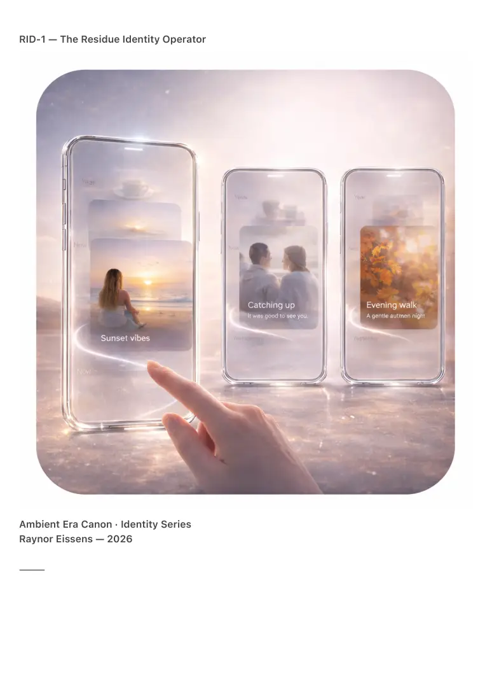

PDF page 1
RID-1 — The Residue Identity Operator
Ambient Era Canon · Identity Series
Raynor Eissens — 2026
⸻

PDF page 2
Abstract
RID-1 formalizes identity within the Ambient Era Canon as a thermodynamic, reversible, non-
symbolic residue generated through embodied interaction between a human and their
environment.
Identity is not defined as a fixed profile, a stored representation, or a persistent record; instead,
it arises as reversible residue: a minimal, fading imprint of presence within a field. This
framework unifies prior work on ΔR (reversible stress), RR-1 (route residue), ARS-1 (action
residue), and AURA-1 (presence residue), establishing the first complete model of post-
symbolic identity in ambient systems.
RID-1 positions identity as a dynamic phenomenon that appears, strengthens, weakens, and
dissolves according to the thermodynamic conditions of interaction.
In systems without storage, extraction, or symbolic persistence — such as AmbientOS — identity
becomes a function of field resonance, not memory.
⸻
1. Motivation
Traditional identity systems depend on:
• persistence
• symbolic representation
• centralized storage
• stable categorization
• extractable features
These assumptions fail in ambient, reversible, field-based systems where:
• actions dissipate (ΔR ≥ 0)
• routes strengthen through repetition and fade through non-use (RR-1)
• actions cannot leave stress residues (ARS-1 = 0)
• presence manifests as momentary chromatic fields (AURA-1)
The shift from symbolic architecture → field architecture demands a new
definition of identity:
one that is dynamic, contextual, reversible, and non-extractive.
RID-1 provides this definition.
⸻
PDF page 3
2. Canonical Definition
RID-1 — The Residue Identity Operator
Identity is not a stored object, but the reversible residue generated through the interaction
between a human and their environment.
Formally:
I(t) = R_rev(t)
Where:
• I(t) = identity at time t
• R_rev(t) = reversible residue at time t
Reversible residue is defined as thermodynamic imprint that:
1. arises through repeated presence,
2. dissipates through non-use,
3. never accumulates irreversibly,
4. never transitions into symbolic memory,
5. never becomes an extractable profile,
6. remains fully reversible within ΔR constraints,
7. expresses perceptually as aura (AURA-1).
Irreversible residue (R_irrev) is explicitly excluded from identity and
represents architectural failure states (e.g., ARS-1 violations, symbolic
overload, non-dissipative cognitive frames).
⸻
3. Properties of Reversible Identity
RID-1 yields the following characteristics:
1. Ephemeral
Identity appears only when presence interacts with a field.
2. Contextual
Identity differs across environments but remains coherent across resonance patterns.
PDF page 4
3. Non-accumulative
Identity cannot “stack”; it must dissipate (ΔR ≥ 0).
4. Non-extractive
Identity cannot be harvested, transferred, or profiled.
5. Non-symbolic
Identity never exists as text, data, or metadata.
6. Field-expressive
Identity manifests as chromatic presence (AURA-1), not as symbol.
7. Dissolvable
Identity must fade naturally within short temporal bounds
(e.g., 30–90 seconds in AmbientOS) to remain humane.
This creates the first identity model that is both safe and thermodynamically viable at
civilizational scale.
⸻
4. Relation to Prior Operators
RID-1 unifies and extends:
ΔR — Reversible Stress
Identity is possible only in systems that preserve reversible transitions.
RR-1 — Route Residue
Shows how non-symbolic residue can represent continuity without memory.
ARS-1 — Action Residue
PDF page 5
Distinguishes reversible vs. irreversible residue; only the eerste can carry identity.
AURA-1 — Presence Residue
Identity is the human experience of reversible presence residue.
TSX-0…5 — Thermodynamic Semiotics
Explains why symbolic identity collapses and field-identity emerges.
RID-1 is the bridge between all residue-based operators.
⸻
5. Implications for Ambient Systems
1. No Profiles
AmbientOS cannot store identity; it renders presence residue.
2. No Authentication
Recognition occurs through field resonance, not credentials.
3. No Tracking
Identity dissolves continuously, eliminating extractive risk.
4. No Optimization
Identity is emergent, not engineered.
5. Human Stability
Reversible residue avoids psychological accumulation and leakage (L↑).
6. Civilizational Viability
Identity-as-residue is the only identity model compatible with
Ω-scale humane systems (zero drift, zero capture).
PDF page 6
⸻
6. Conclusion
RID-1 replaces the classical idea of identity with a thermodynamic, reversible, field-native
construct.
Identity is not a quantifiable, stored property of a person,
but a momentary pattern that appears through interaction and dissolves through time.
This operator completes the residue trilogy:
• RR-1 — Route Residue
• ARS-1 — Action Residue
• RID-1 — Residue Identity
and provides the conceptual foundation for humane identity in AmbientOS,
chromatic telephony, CFQR-based presence systems, and Type-1 civilization
architectures.
⸻
Citation
Eissens, R. (2026). RID-1 — The Residue Identity Operator (1.0).
Ambient Era Canon. Zenodo.
⸻